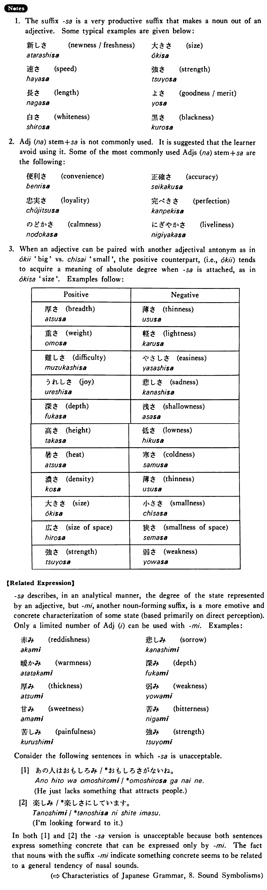

- (ks).
- このうちの広さはちょうどいい・いいです。
- This size of this house is just right.
- (a).
- 富士山の高さはどのぐらいですか。
- What is the approximate height of Mt. Fuji?
- (b).
- 日本語の難しさがよく分かりました。
- I'm now well aware of the difficulty of Japanese.
- (c).
- アメリカのよさはパイオニア・スピリットでしょう。
- One of America's good qualities is perhaps its pioneering spirit.
